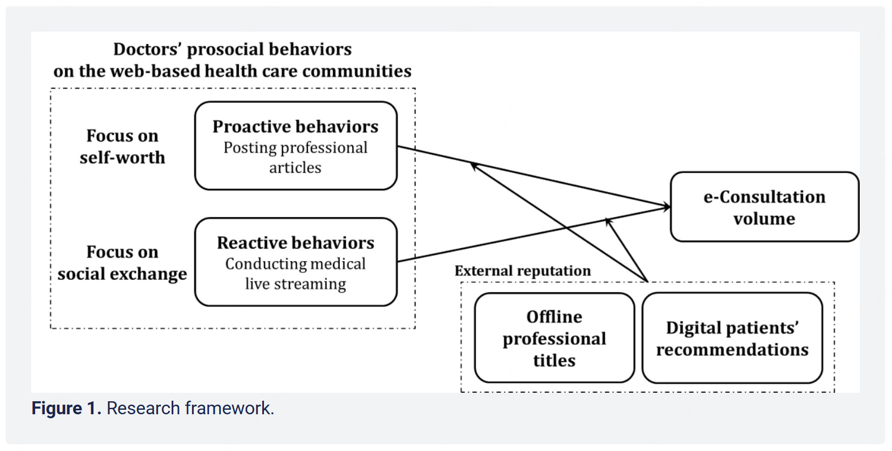
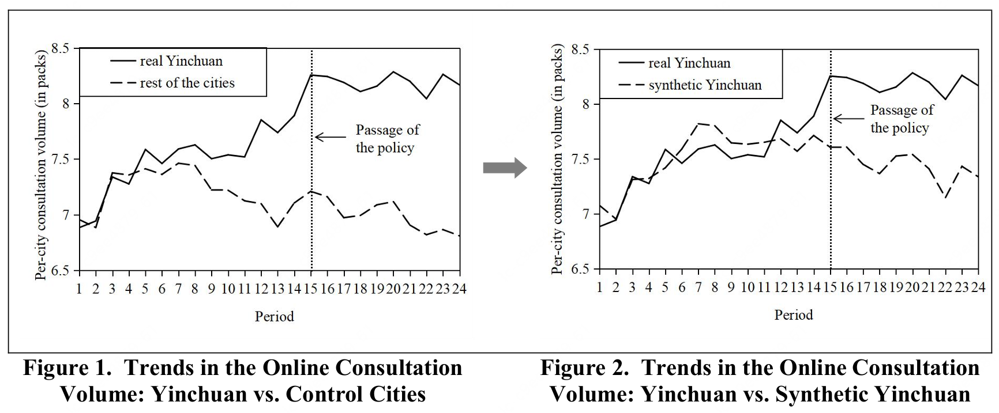
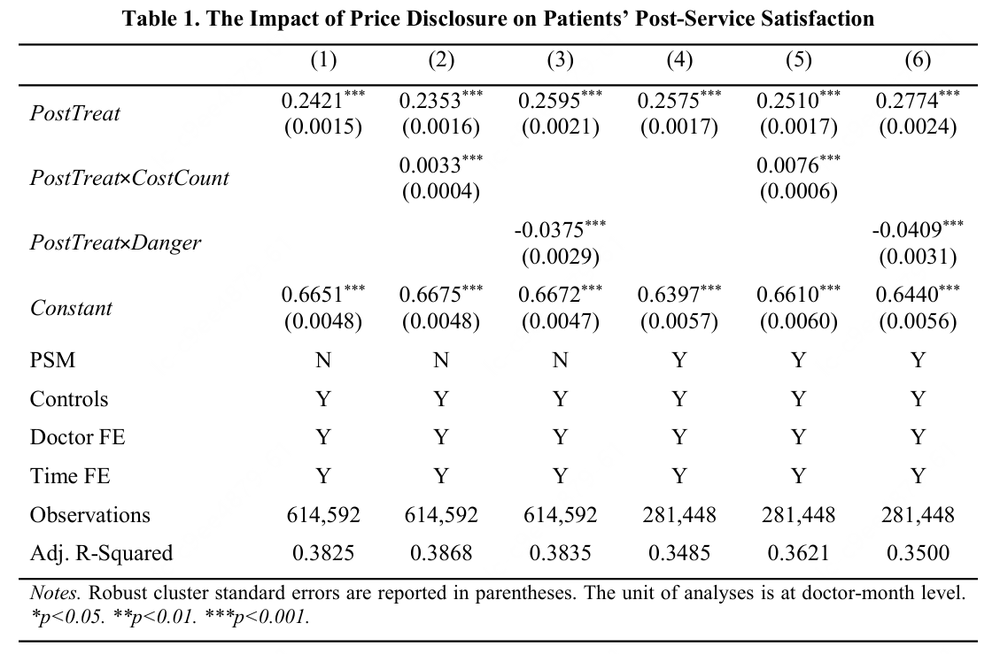
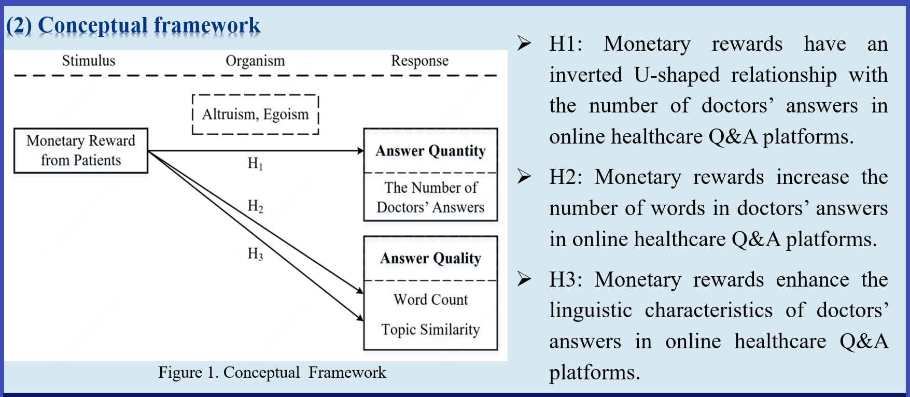

I am a Business Analyst at Meituan, responsible for data modeling in the natural person domain and user traffic behavior domain.
I obtained my bachelor's and master's degrees in Management Science and Engineering from SOM, Xi'an Jiaotong University, advised by Prof. Xiaoxiao Liu. My research focuses on Economics in HIS, Causal inference, and Data science.




* indicates corresponding author.